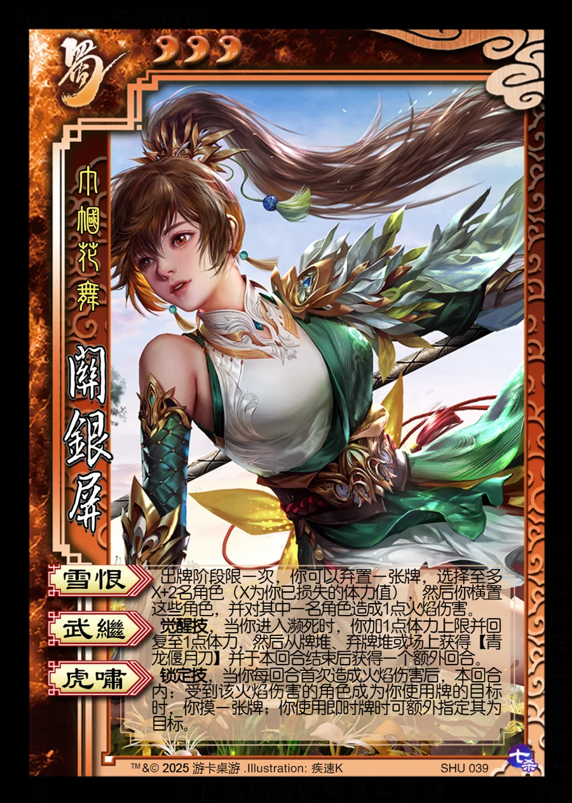

点击卡面查看大图
蜀
关银屏
♥3巾帼花舞
雪恨
出牌阶段限一次，你可以弃置一张牌，选择至多X+2名角色（X为你已损失的体力值），然后你横置这些角色，并对其中一名角色造成1点火焰伤害。
武继觉醒技
觉醒技，当你进入濒死时，你加1点体力上限并回复至1点体力，然后从牌堆、弃牌堆或场上获得【青龙偃月刀】并于本回合结束后获得一个额外回合。
虎啸锁定技
锁定技，当你每回合首次造成火焰伤害后，本回合内：受到该火焰伤害的角色成为你使用牌的目标时，你摸一张牌；你使用即时牌时可额外指定其为目标。